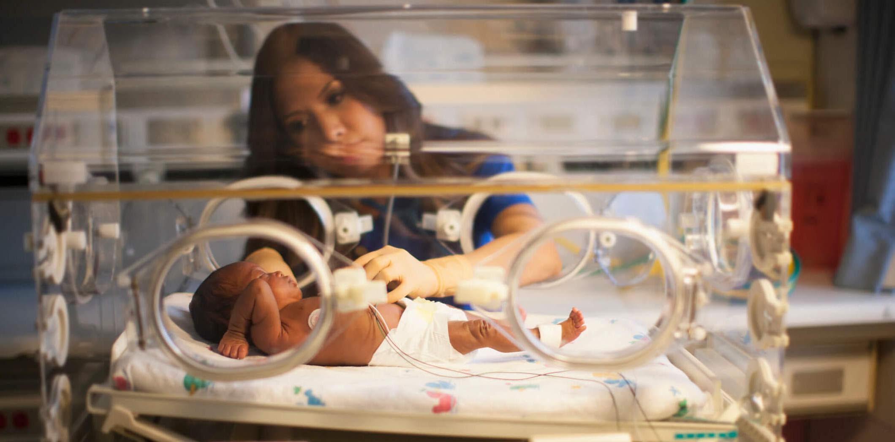

I've been wanting to become a nurse for a really long time now, ever since I've been in elementary school but I've really started considering it since around 7-8th grade. I would love to become a nicu nurse or just a nurse who works with babies and soon-to-be mothers in general. I want to take care of people and make sure everyone knows their voices are heard when they become my patients.
